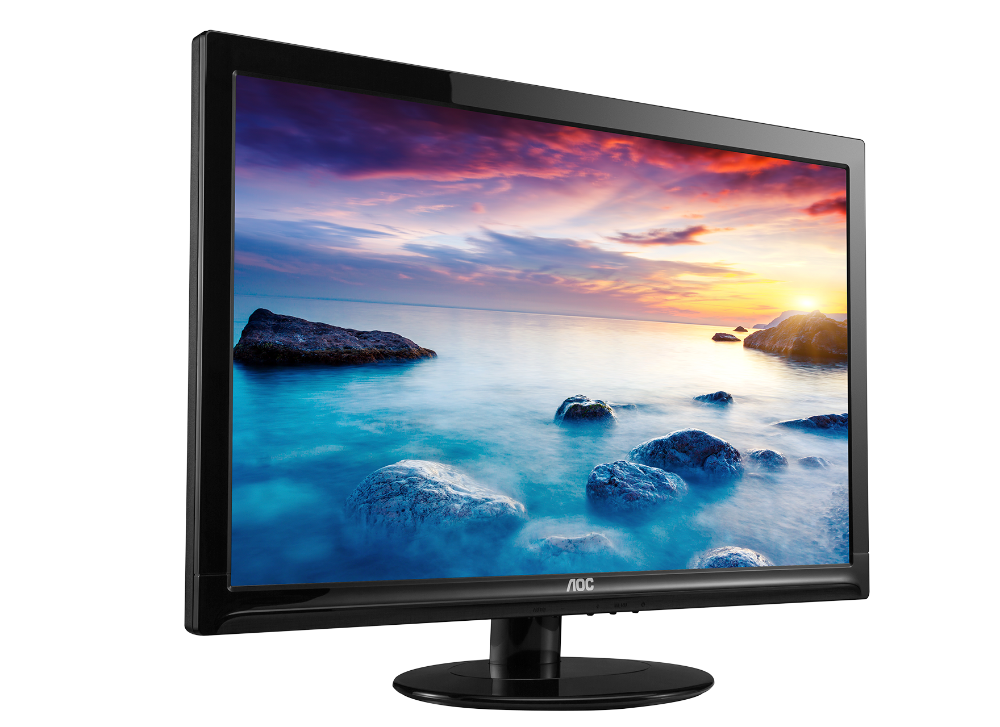

Tipos de Hardware
Una de las formas de clasificar el hardware es en dos categorías:
por un lado, el hardware principal, que abarca el conjunto de componentes indispensables necesarios para otorgar la funcionalidad mínima a una computadora;
y por otro lado, el hardware complementario, que, como su nombre indica, es el utilizado para realizar funciones específicas (más allá de las básicas), no estrictamente necesarias para el funcionamiento de la computadora.
Hardware principal
La unidad central de procesamiento o procesador es un componente del hardware dentro de un ordenador, teléfonos inteligentes, y otros dispositivos programables.
Su función es interpretar las instrucciones de un programa informático mediante la realización de las operaciones básicas aritméticas, lógicas, y externas (procedentes de la unidad de entrada/salida).
Su diseño y avance ha variado notablemente desde su creación, aumentando su eficiencia y potencia, y reduciendo aspectos como el consumo de energía y el coste.
- CPU
- Motherboard
- RAM
- HDD
Hardware complementario
Son complementos para el uso del hardware principal, se podrían caracterizar por ser los medios de control principales para el uso del hardware,
son los medios de entrada tales como monitores para visualizaciones graficas, teclados y ratones para la ejecución de comandos de teclas y movimientos, así como tambien,
Unidades de CD-Rom/Dvd y otros medios o puertos de lectura para complementar el uso y así mismo utilizar diversos tipos de software.
- Monitor
- 
- Teclado
- Mouse
- Unidad Dvd

La historia del hardware de computador se puede clasificar en cuatro generaciones, cada una caracterizada por un cambio tecnológico de importancia. Una primera delimitación podría hacerse entre hardware principal , como el estrictamente necesario para el funcionamiento normal del equipo, y el «complementario», como el que realiza funciones específicas.